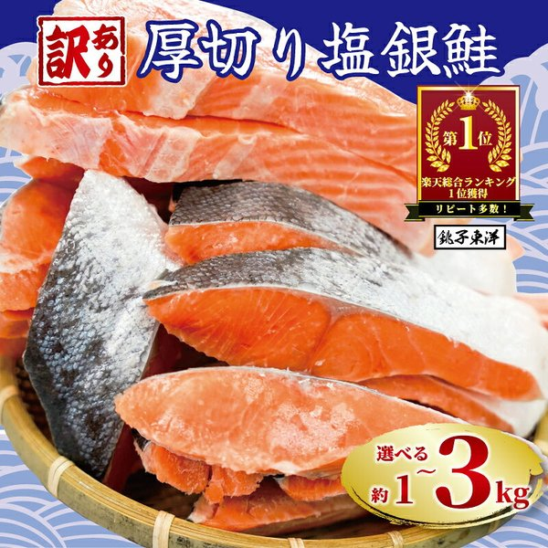
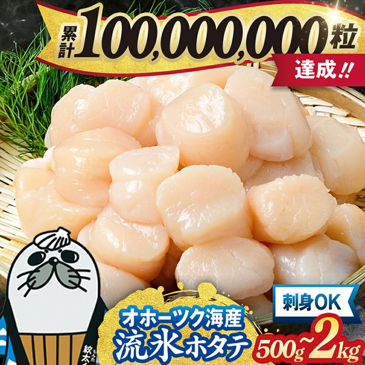
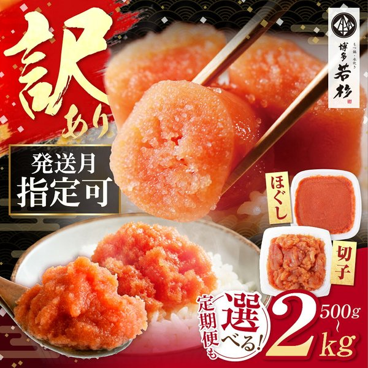
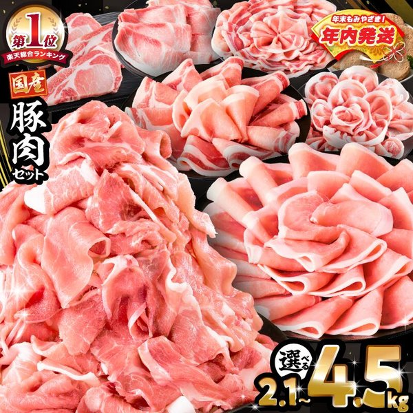
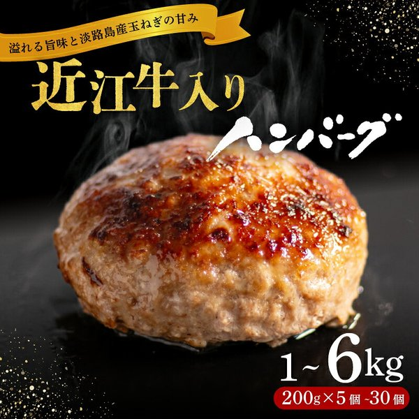
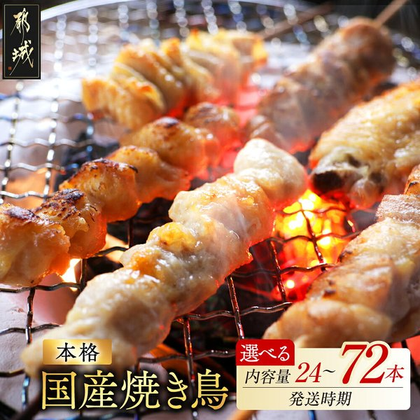
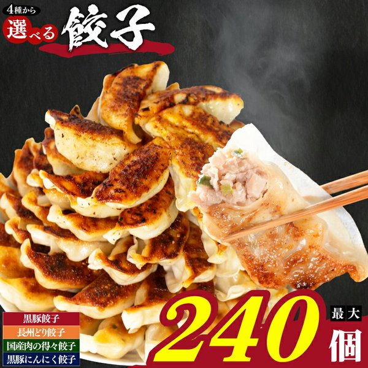
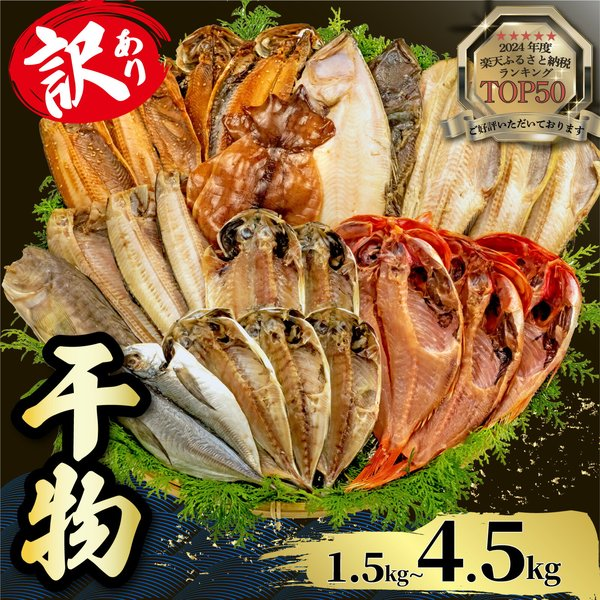
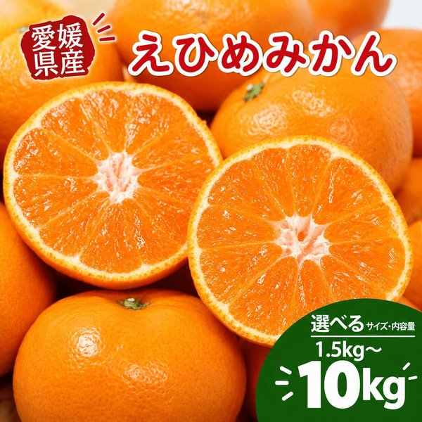
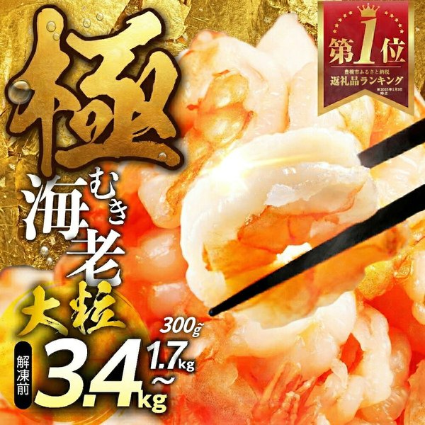

【2026年・ふるさと納税】訳あり・大容量でコスパ最強のグルメ10選｜塩銀鮭3kg・ホタテ2kg・明太子2kg・豚肉4.5kg・ハンバーグ6kg・焼き鳥72本・餃子240個・干物4.5kg・みかん10kg・むき海老3.4kgを寄附額で比較
ふるさと納税の返礼品は、同じ寄附額でもらえる量が自治体によって大きく違います。とくに「訳あり」と表示された返礼品は、形や大きさが揃わない代わりに量が多く、家庭で食べるならこちらが有利です。
選ぶ軸は3つです。「まず1回で届く量」。冷凍庫に入るかどうかを先に確かめます。4kgを超える肉や魚は、小分けの袋がいくつあるかで使い勝手が変わります。「次に下ごしらえの有無」。背ワタを処理したむき海老や、串に刺した焼き鳥は、届いたその日から調理できます。「最後に発送時期」。年内に食べたいものは、発送月を選べる返礼品を選びます。なお、レビュー件数が50件に満たない商品は記事内に実数を明記しています。
本記事では、楽天市場のふるさと納税で人気・高評価の訳あり・大容量グルメ10選を、寄附額とレビュー評価つきで写真付き紹介します。
- おすすめ10選 スペック・特徴比較表
- BEST 1｜訳あり 厚切り 塩銀鮭 切り身 1kg・2kg・3kgから選べる
- BEST 2｜オホーツク海産 ホタテ玉冷 2kg（訳あり・サイズ不揃い）
- BEST 3｜訳あり 辛子明太子 無着色 切れ子・ほぐし 500g〜2kg
- BEST 4｜豚肉バラエティセット 2.1kg・3.6kg・4.5kgから選べる
- BEST 5｜近江牛入り 合挽きハンバーグ 1kg〜6kgから選べる
- BEST 6｜職人串打ちの本格焼き鳥 24本〜72本から選べる
- BEST 7｜餃子 72個〜240個 冷凍・小分け
- BEST 8｜訳あり 干物 1.5kg〜4.5kg 詰め合わせ
- BEST 9｜愛媛みかん 選べる内容量（先行予約）
- BEST 10｜極 むき海老 背ワタ無 最大3.4kg（訳あり）
- 【読者負担0円】買わなくても得する無料サービス
- まとめ：訳あり・大容量グルメの返礼品10選の選び方
| 順位 | 商品名 | ブランド | 最大の特徴・おすすめ理由 | 総合評価 |
|---|---|---|---|---|
| BEST 1 | 訳あり 厚切り 塩銀鮭 切り身 1kg・2kg・3kgから選べる | 千葉県銚子市 | 厚切りで食べごたえがある | 4.72 |
| BEST 2 | オホーツク海産 ホタテ玉冷 2kg（訳あり・サイズ不揃い） | 北海道紋別市 | 生食用として食べられる | 4.77 |
| BEST 3 | 訳あり 辛子明太子 無着色 切れ子・ほぐし 500g〜2kg | 福岡県福津市 | 無着色で色が自然 | 4.76 |
| BEST 4 | 豚肉バラエティセット 2.1kg・3.6kg・4.5kgから選べる | 宮崎県宮崎市 | 部位の違う豚肉が一度に揃う | 4.74 |
| BEST 5 | 近江牛入り 合挽きハンバーグ 1kg〜6kgから選べる | 滋賀県竜王町 | 近江牛と淡路島産玉ねぎを使用 | 4.73 |
| BEST 6 | 職人串打ちの本格焼き鳥 24本〜72本から選べる | 宮崎県都城市 | 職人が串に刺した本格焼き鳥 | 4.69 |
| BEST 7 | 餃子 72個〜240個 冷凍・小分け | 山口県下関市 | 最大240個の大容量 | 4.55 |
| BEST 8 | 訳あり 干物 1.5kg〜4.5kg 詰め合わせ | 静岡県沼津市 | ホッケ・金目鯛・鯵・鯖などが入る | 4.60 |
| BEST 9 | 愛媛みかん 選べる内容量（先行予約） | 愛媛県愛南町 | 旬の時期に産地から届く | 4.22 |
| BEST 10 | 極 むき海老 背ワタ無 最大3.4kg（訳あり） | 愛知県豊橋市 | 背ワタ処理済みですぐ調理できる | 4.81 |
訳あり 厚切り 塩銀鮭 切り身 1kg・2kg・3kgから選べる

銚子市の返礼品は、塩を振って熟成させた銀鮭を厚切りにした切身です。1kgから3kgまで内容量を選べ、小分けで冷凍されているので使う分だけ解凍できます。訳あり品なので切身の大きさは揃いませんが、焼くだけで夕食の一品になります。寄附額は約8,000円（2026年11月時点）。
- 厚切りで食べごたえがある
- 1kg〜3kgから内容量を選べる
- 小分け冷凍で使う分だけ解凍できる
- 訳あり品なので切身の大きさと形が不揃い
オホーツク海産 ホタテ玉冷 2kg（訳あり・サイズ不揃い）

紋別市の返礼品は、オホーツク海で獲れたホタテの貝柱を凍らせた玉冷です。生食用として食べられ、バラバラに凍っているので必要な分だけ取り出せます。サイズが不揃いな訳あり品で、2kgの大容量。バター焼きにも刺身にも使えます。寄附額は約11,000円（2026年11月時点）。
- 生食用として食べられる
- バラ凍結で必要な分だけ使える
- 2kgの大容量で訳あり価格
- サイズが不揃いなので、刺身にすると大きさが混ざる
訳あり 辛子明太子 無着色 切れ子・ほぐし 500g〜2kg

福津市の返礼品は、無着色の辛子明太子を切れ子とほぐしで詰めた訳あり品です。500gから2kgまで容量を選べ、発送月も指定できます。形が揃わない分だけ価格を抑えてあり、ごはんのお供にもパスタにも使えます。寄附額は約6,000円（2026年11月時点）。
- 無着色で色が自然
- 500g〜2kgから容量を選べる
- 切れ子なので料理に使いやすい
- 切れ子とほぐしなので、形の揃った明太子は入らない
豚肉バラエティセット 2.1kg・3.6kg・4.5kgから選べる

宮崎市の返礼品は、ロースやバラなど部位の違う豚肉をまとめたセットです。2.1kgから4.5kgまで選べ、小分けの袋に入っているので使う分だけ解凍できます。しゃぶしゃぶにも炒め物にも回せるので、冷凍庫にあると献立を決めやすい返礼品です。寄附額は約13,000円（2026年11月時点）。
- 部位の違う豚肉が一度に揃う
- 最大4.5kgの大容量
- 小分けで使う分だけ解凍できる
- 小分けの袋が多いので、冷凍庫の整理が必要になる
近江牛入り 合挽きハンバーグ 1kg〜6kgから選べる

竜王町の返礼品は、近江牛と淡路島産の玉ねぎを合わせた合挽きハンバーグです。1kgから6kgまで選べ、1個200gの個包装で凍らせてあります。袋のまま湯せんするか、フライパンで焼くだけで主食になるので、平日の夕食の支えになります。寄附額は約8,000円（2026年11月時点）。
- 近江牛と淡路島産玉ねぎを使用
- 最大6kgの大容量
- 200gの個包装で使いやすい
- 合挽きなので牛100%ではなく、豚肉が混ざっている
職人串打ちの本格焼き鳥 24本〜72本から選べる

都城市の返礼品は、鶏肉を職人が串に刺して生のまま冷凍した焼き鳥です。24本から72本まで本数を選べ、小分けのパックで届きます。炭火で焼くかフライパンで焼けば、家で焼き鳥屋の味が楽しめます。寄附額は約8,000円（2026年11月時点）。
- 職人が串に刺した本格焼き鳥
- 24本〜72本から選べる
- 生のまま冷凍で香りが残る
- 串焼きなので、焼くときに網かフライパンの準備が要る
餃子 72個〜240個 冷凍・小分け

下関市の返礼品は、黒豚の餃子を冷凍でまとめたセットです。72個から240個まで選べ、小分けのパックなので食べる分だけ焼けます。焼き餃子にも水餃子にも使え、おかずにもおつまみにもなる返礼品です。寄附額は約7,000円（2026年11月時点）。
- 最大240個の大容量
- 小分けパックで食べる分だけ焼ける
- 焼いても水餃子にしても使える
- 240個は冷凍庫の場所を取り、置き場所を決めてから頼む
訳あり 干物 1.5kg〜4.5kg 詰め合わせ

沼津市の返礼品は、ホッケや金目鯛、鯵、鯖などを干した訳ありの詰め合わせです。1.5kgから4.5kgまで容量を選べ、発送時期も指定できます。魚の種類はおまかせになりますが、焼くだけで朝食や夕食の一品になります。寄附額は約7,000円（2026年11月時点）。
- ホッケ・金目鯛・鯵・鯖などが入る
- 1.5kg〜4.5kgから選べる
- 焼くだけで一品になる
- 魚の種類はおまかせなので、偏ることがある
愛媛みかん 選べる内容量（先行予約）

愛南町の返礼品は、愛媛県産のみかんを旬の時期に届ける先行予約のセットです。内容量を選べ、5kgから10kgまでまとめて届きます。柑橘の産地で育ったみかんは、家族で食べるのはもちろん、年末の手土産にも使えます。寄附額は約5,000円（2026年11月時点）。
- 旬の時期に産地から届く
- 5kg〜10kgから内容量を選べる
- 年末の手土産にも使える
- 先行予約なので、発送はみかんの旬の時期になる
極 むき海老 背ワタ無 最大3.4kg（訳あり）

豊橋市の返礼品は、背ワタを処理したむき海老を凍らせた訳ありの大容量セットです。最大3.4kgまで選べ、袋から出して炒めるだけで料理に使えます。エビチリにも天ぷらにも回せるので、冷凍庫に1袋あると献立の幅が広がります。寄附額は約7,000円（2026年11月時点）。
- 背ワタ処理済みですぐ調理できる
- 最大3.4kgの大容量
- 炒め物にも揚げ物にも使える
- 解凍後は日持ちしないので、使う分だけ解凍する
この記事の商品を買う前に、まずは無料で得する選択肢をチェック。どれも登録・利用は0円で、無料期間中に解約すれば料金はかかりません。読みたい雑誌がある人、ポイントを貯めたい人、アンケートなら気軽という人、それぞれに合うものを選べます。
初回31日無料・無料期間中に解約すれば0円 → 楽天ポイントモール｜登録無料で毎日ポイ活
買い物なしでもポイントが貯まる無料サービス → 楽天インサイト｜アンケートに答えてポイント
登録無料・すきま時間のアンケートで貯まる → 楽天カード｜年会費永年無料
新規発行・年会費ずっと0円 →
4つのサービスの違いと使い分けは「出費0円で得する！買わずにポイントが貯まる無料サービス厳選4選」でまとめています。
💡 まとめ：訳あり・大容量グルメの返礼品10選の選び方
訳あり・大容量の返礼品は、魚・肉・小腹の3つに分けて揃えると冷凍庫が回ります。魚は、銚子市の厚切り塩銀鮭、紋別市のホタテ玉冷2kg、沼津市の干物4.5kg、豊橋市のむき海老3.4kg。肉は、宮崎市の豚肉バラエティ4.5kg、竜王町の近江牛入りハンバーグ6kg、都城市の焼き鳥72本、下関市の餃子240個。ごはんのお供は、福津市の訳あり明太子。果物は、愛南町のみかん。寄附額は5,000円から13,000円まで幅があるので、年末の寄附枠と冷凍庫の空きを見ながら、まずは週に一度は使うものから選ぶと無駄になりません。
楽天市場では「5と0のつく日」や「お買い物マラソン」などのキャンペーンに合わせて購入すると、ポイント還元が最大化してお得に手に入ります。ぜひチェックしてみてくださいね。